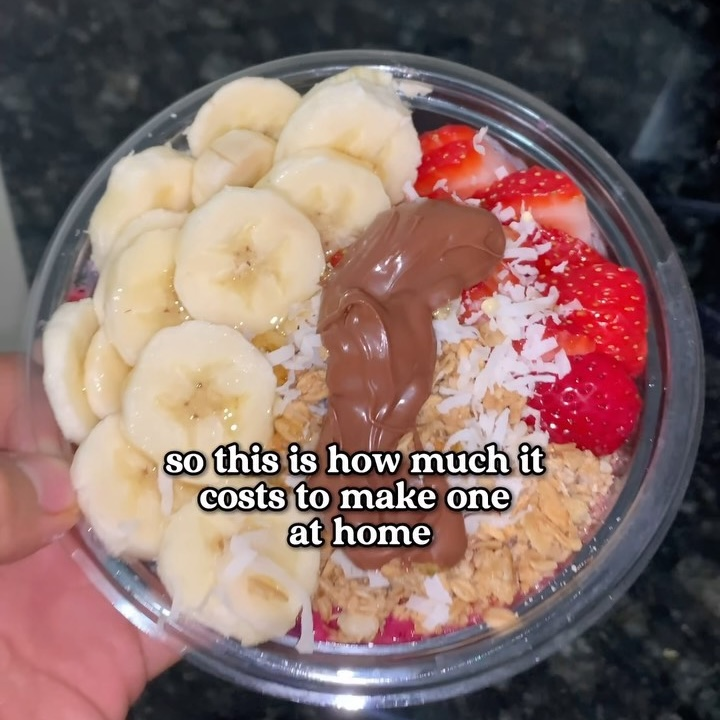

❤️ Acai Bowl
Ingredientes:
- Berries/Bayas congeladas
- 1 paquete smoothie Acai
- ¼ tza jugo Manzana
- 2 cdas Yogur Natural
- Frutas Frescas
- Granola
- Copos de coco
- Miel
- Crema de avellanas
Instrucciones:
- Licúa una mezcla de bayas congeladas, 1 paquete de smoothie de açaí, 1/4 taza de jugo de manzana y 2
cucharadas de yogur natural.
- Pica frutas frescas.
- Esparce el smoothie en el fondo de un tazón pequeño.
- Haz una capa de granola sobre el smoothie.
- Coloca las frutas frescas sobre la granola.
- Espolvorea copos de coco encima.
- Rocía miel.
- Agrega crema de avellanas al gusto.